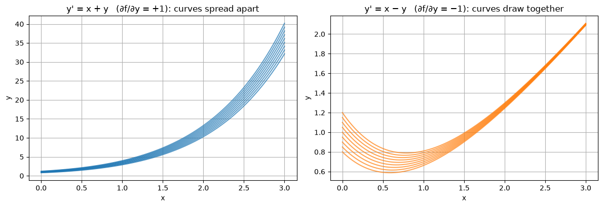

Code
import numpy as np
import matplotlib.pyplot as plt
plt.rcParams["figure.figsize"] = (7, 4.5)
plt.rcParams["axes.grid"] = True
np.set_printoptions(precision=6, suppress=True)Miraj Samarakkody
October 14, 2026
This chapter is about computing solutions of the initial value problem (IVP)
\[y' = f(x, y), \qquad y(x_0) = y_0, \qquad x_0 \le x \le b\]
when no formula for \(y(x)\) is available. It starts from the simplest method (Euler) and builds up to the ideas used inside professional solvers: higher-order Runge–Kutta methods, error estimation, stability, stiffness, adaptive step size and multistep methods.
Prerequisite: First-Order Differential Equations, sections 1–5.
| Section | What it covers | |
|---|---|---|
| 1 | Euler’s method | Three derivations, local and global error, a proof that Euler converges, examples where it fails |
| 2 | Second-order Runge–Kutta methods | Heun, midpoint and Ralston; deriving the whole two-stage family from the Taylor series |
| 3 | The classical Runge–Kutta method (RK4) | RK4, Butcher tableaux, order conditions, the Butcher barriers |
| 4 | Error, order and efficiency | Measuring order, accuracy per unit of work, Richardson extrapolation, round-off error |
| 5 | Stability and stiff equations | Amplification factors, stability regions, implicit methods, A- and L-stability, stiffness |
| 6 | Adaptive step size | Error estimators, embedded pairs (Heun–Euler, Bogacki–Shampine), step-size control |
| 7 | Multistep methods | Adams–Bashforth, Adams–Moulton, predictor–corrector, zero-stability and Dahlquist’s theorems |
| 8 | Systems and higher-order equations | Vector ODEs, oscillators, the pendulum, predator–prey models, conserved quantities |
The analytical methods (separable, linear, exact equations) cover only a small fraction of the equations that occur in practice. Even an innocent-looking equation such as the Riccati equation
\[y' = x^2 + y^2\]
has no solution in terms of elementary functions. Other times a formula exists but is implicit, or contains integrals nobody can evaluate. A numerical method only needs to be able to evaluate \(f(x, y)\) at given numbers, so it works for every equation.
The price is that the result is a table of approximate values, not a formula, and it contains errors. Most of this chapter is about understanding, estimating and controlling those errors.
Before computing a solution it is worth knowing that there is exactly one solution to compute.
Lipschitz condition. \(f\) satisfies a Lipschitz condition in \(y\) on a region \(D\) if there is a constant \(L\) such that
\[|f(x, y_1) - f(x, y_2)| \le L\,|y_1 - y_2| \qquad \text{for all } (x, y_1), (x, y_2) \in D.\]
If \(\partial f/\partial y\) exists and is bounded on \(D\) (and \(D\) is convex in \(y\)), the mean value theorem shows that \(L = \max_D |\partial f / \partial y|\) works.
Theorem (Picard–Lindelöf). If \(f\) is continuous and satisfies a Lipschitz condition in \(y\) on a rectangle around \((x_0, y_0)\), then the IVP has exactly one solution on some interval around \(x_0\).
| Equation | \(\partial f/\partial y\) | What happens |
|---|---|---|
| \(y' = x + y\) | \(1\) | \(L = 1\) everywhere: one solution, defined for all \(x\) |
| \(y' = y^2\), \(y(0) = 1\) | \(2y\) | Lipschitz only on bounded \(y\)-ranges: the solution \(y = 1/(1-x)\) exists only for \(x < 1\) (it blows up) |
| \(y' = \sqrt{|y|}\), \(y(0) = 0\) | \(\tfrac{1}{2}|y|^{-1/2}\), unbounded at \(y = 0\) | Not Lipschitz: both \(y = 0\) and \(y = x^2/4\) (\(x \ge 0\)) are solutions |
The last two rows are warnings. A numerical method applied to \(y' = y^2\) happily produces finite numbers beyond \(x = 1\), and applied to \(y' = \sqrt{|y|}\) it returns \(y_n = 0\) forever without telling you a second solution exists. The theory tells you when the numbers can be trusted.
Let \(y\) and \(z\) solve the same equation with slightly different starting values. Using the Lipschitz condition and Grönwall’s inequality one can show
\[|y(x) - z(x)| \le e^{L(x - x_0)}\,|y_0 - z_0|.\]
So a small change in the starting value can grow, at worst, exponentially with rate \(L\). Whether it actually grows depends on the sign of \(\partial f/\partial y\):
This matters for numerical methods because every step makes a small error, which moves the computed solution onto a neighbouring solution curve. If neighbouring curves spread apart, those errors are amplified as the computation proceeds; if they draw together, old errors die out.
The plots show solutions starting from \(y_0 \in [0.8, 1.2]\) for \(y' = x + y\) (solutions \(y = Ce^{x} - x - 1\)) and \(y' = x - y\) (solutions \(y = x - 1 + Ce^{-x}\)).
x = np.linspace(0, 3, 200)
fig, axes = plt.subplots(1, 2, figsize=(12, 4.2))
for y0 in np.linspace(0.8, 1.2, 9):
C = y0 + 1
axes[0].plot(x, C * np.exp(x) - x - 1, color="C0", alpha=0.7)
axes[1].plot(x, x - 1 + C * np.exp(-x), color="C1", alpha=0.7)
axes[0].set_title("y' = x + y (∂f/∂y = +1): curves spread apart")
axes[1].set_title("y' = x − y (∂f/∂y = −1): curves draw together")
for ax in axes:
ax.set_xlabel("x"); ax.set_ylabel("y")
plt.tight_layout()
for y0 in (0.8, 1.2):
C = y0 + 1
print(f"y0 = {y0}: y(3) = {C*np.exp(3) - 4:8.4f} for x + y, {2 + C*np.exp(-3):.4f} for x − y")y0 = 0.8: y(3) = 32.1540 for x + y, 2.0896 for x − y
y0 = 1.2: y(3) = 40.1882 for x + y, 2.1095 for x − y
A spread of \(0.4\) in the starting value becomes a spread of \(0.4e^3 \approx 8\) at \(x = 3\) for the first equation, but shrinks to \(0.4e^{-3} \approx 0.02\) for the second.
A numerical method replaces the unknown function by its values on a grid.
| Symbol | Meaning |
|---|---|
| \(h\) | step size |
| \(x_n = x_0 + nh\) | grid points, \(n = 0, 1, \dots, N\) with \(N = (b - x_0)/h\) |
| \(y(x_n)\) | the exact solution at \(x_n\) (unknown) |
| \(y_n\) | the computed approximation to \(y(x_n)\) |
| \(f_n = f(x_n, y_n)\) | the slope evaluated at the computed point |
| \(e_n = y(x_n) - y_n\) | the global error at \(x_n\) |
Integrating \(y' = f(x, y)\) over one step gives the exact relation
\[y(x_{n+1}) = y(x_n) + \int_{x_n}^{x_{n+1}} f\big(x, y(x)\big)\,dx.\]
The integral cannot be computed exactly because \(y(x)\) inside it is unknown. Each method is a different way of approximating it, and most correspond to a familiar quadrature rule:
| Method | Approximates the integral by | Quadrature rule | Section |
|---|---|---|---|
| Euler | slope at the left end | left rectangle | 1 |
| Backward Euler | slope at the right end | right rectangle | 5 |
| Midpoint | slope at the middle | midpoint rule | 2 |
| Heun, trapezoidal | average of the end slopes | trapezoidal rule | 2, 5 |
| RK4 | weighted average of four slopes | Simpson’s rule | 3 |
| Adams methods | integral of a polynomial through earlier slopes | interpolatory quadrature | 7 |
The central theorem of the subject says, roughly,
\[\textbf{consistency} + \textbf{stability} \;\Longrightarrow\; \textbf{convergence}.\]
A convergent method has order \(p\) if its global error behaves like \(Ch^p\). Sections 1–4 are mostly about consistency and order, Sections 5 and 7 about stability.
To be able to measure errors exactly, most sections use the same test problem:
\[y' = x + y, \qquad y(0) = 1, \qquad \text{exact solution } y = 2e^{x} - x - 1.\]